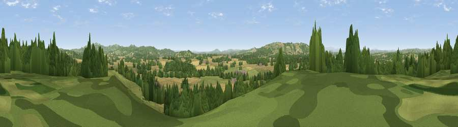

Broomy Lakes
#14827 in England · top 38% of its area beats it · near AshpertonWhere it is
The exact computed spot (SO 65975 42375). Click the marker for map links.
The view, rendered

A 360° render of this exact spot computed from the terrain model, tree cover and land cover — summer colours, afternoon light, calibrated against photographs of famous viewpoints. Real trees, hedges and buildings will differ in detail.
The panorama
Grey silhouette: terrain skyline in each direction (720 bearings, Earth curvature and refraction included). Dashed green: skyline with trees (+15 m) and buildings (+8 m) as obstacles. Blue strip: how far the ground is visible on each bearing.
Where the view opens
Wedge length = distance to the farthest visible ground on that bearing (vegetation-aware). Rings at 10, 25 and 50 km.
What fills the view
35% cropland · 34% grassland · 29% woodland ·
Angular shares of the visible panorama (visual magnitude), not map area. Landscape diversity 0.49 (0–1 Shannon).
Key numbers
More beautiful places nearby
The staircase of upgrades: each row has a higher view potential than everything closer. Driving times are estimates from straight-line distance, calibrated against real road routing — check an actual route before setting out.
| Place | Direction | Drive | Score |
|---|---|---|---|
| Viewpoint near Bosbury | NNE · 2 km | ~6 min | 62.7 |
| Viewpoint near Fromes Hill | NNE · 4 km | ~9 min | 67.3 |
| Viewpoint near Putley | SSW · 6 km | ~12 min | 80.9 |
| Viewpoint near Tarrington | SW · 6 km | ~12 min | 81.4 |
| Seagar Hill | SW · 6 km | ~12 min | 82.1 |
| Herefordshire Beacon | ESE · 10 km | ~20 min | 85.8 |
| Millennium Hill | ESE · 10 km | ~20 min | 86.9 |
| Worcestershire Beacon | ENE · 11 km | ~21 min | 87.1 |
52.07868, -2.49790 · source: dobih hill · position refined by local search. Computed location — check access rights before visiting.